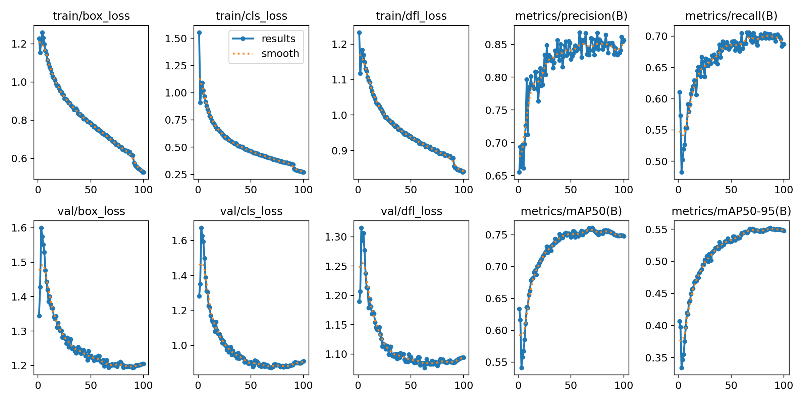
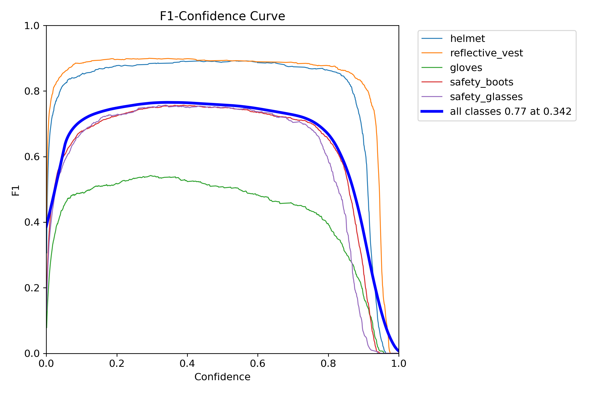
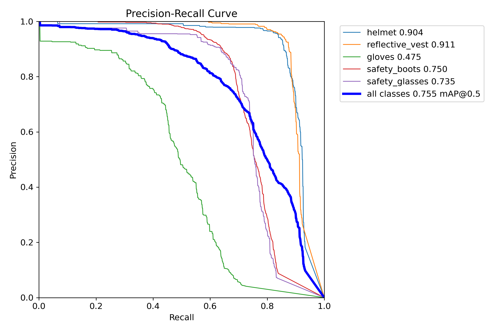
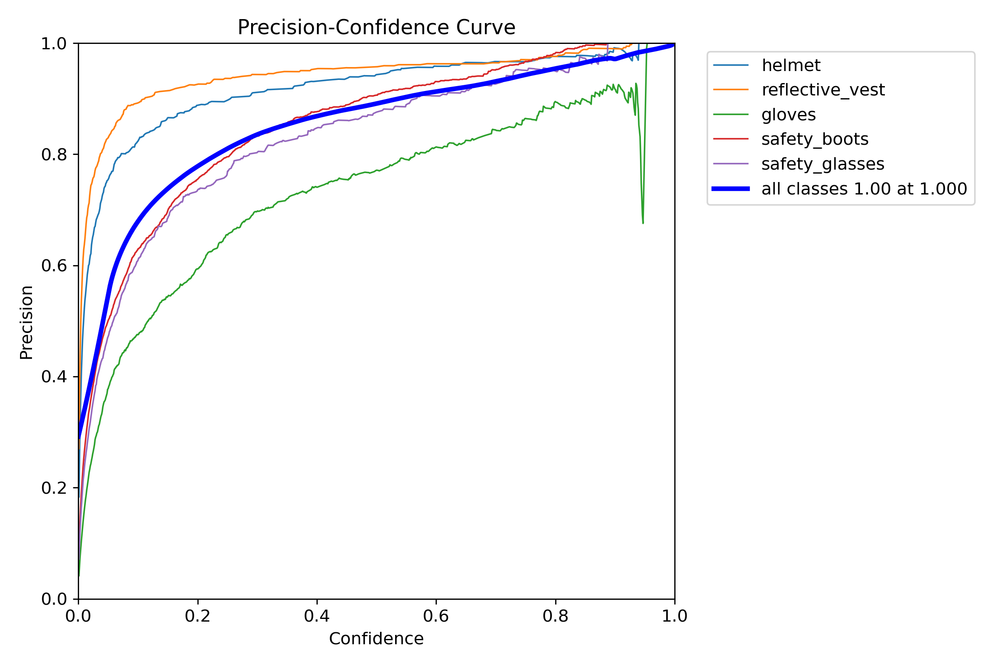
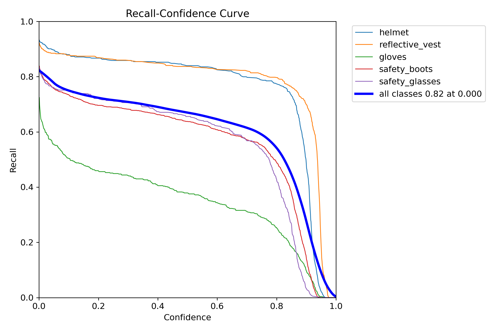
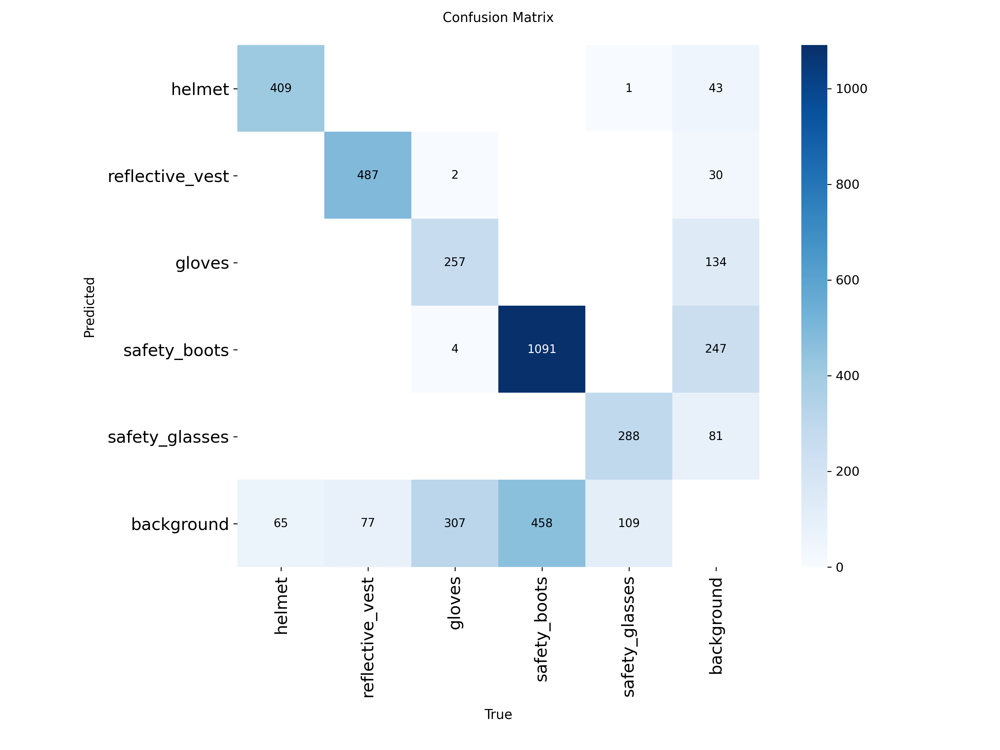
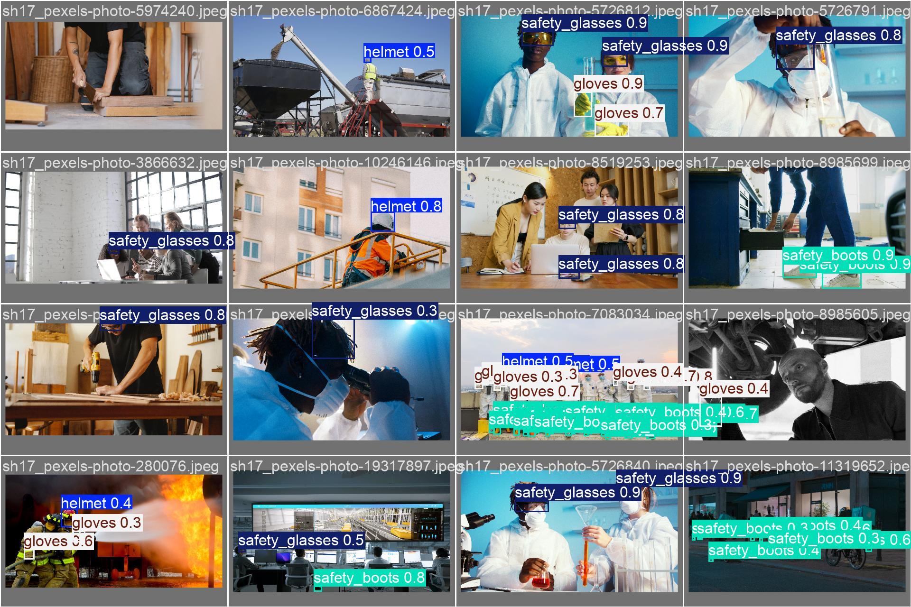

Dự án: Safety PPE Checker | Version: 1.0 (Final)
Mô hình nhận diện thiết bị bảo hộ lao động (PPE) đã hoàn thành giai đoạn huấn luyện chính thức. Kết quả cho thấy mô hình hoạt động ổn định, độ chính xác cao và sẵn sàng đưa vào ứng dụng giám sát an toàn tại công trường/nhà máy.
85.7%
68.7%
74.8%
| Tham số | Giá trị |
|---|---|
| Kiến trúc mô hình | YOLOv8s (Small) |
| Kích thước hình ảnh | 640x640 pixels |
| Số vòng lặp (Epochs) | 100 |
| Dữ liệu huấn luyện | Dataset an toàn lao động tổng hợp |
Dưới đây là biểu đồ thể hiện sự hội tụ của mô hình. Các chỉ số Loss giảm dần và Metrics (mAP) tăng trưởng đều đặn, cho thấy quá trình học tập diễn ra hiệu quả.

Đồ thị kết quả huấn luyện qua 100 epoch (Loss & mAP)Các đường cong dưới đây đánh giá chi tiết khả năng nhận diện và độ tin cậy của mô hình tại các ngưỡng tin cậy khác nhau.

F1-Confidence Curve
Precision-Recall Curve
Precision-Confidence Curve
Recall-Confidence CurveMa trận này minh chứng cho khả năng phân loại chính xác các lớp nhân vật và thiết bị bảo hộ.

Ma trận nhầm lẫn chi tiết các lớpKết quả dự đoán thực tế trên tập dữ liệu kiểm định (Validation set) cho thấy mô hình nhận diện chính xác các thiết bị bảo hộ ngay cả khi có nhiều vật thể chồng chéo.

Mẫu nhận diện thực tế từ hệ thốngĐánh giá: Mô hình đạt chất lượng tốt (85.7% precision), đủ tin cậy để triển khai thực tế.
Hành động tiếp theo: